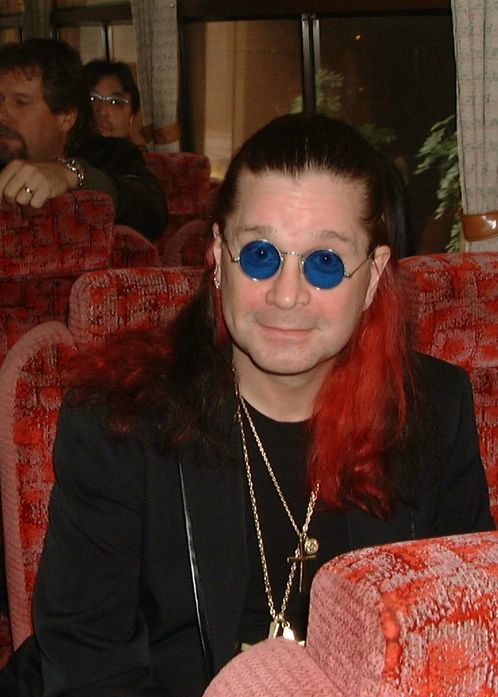

Controversy

Throughout his career, many groups have accused Osbourne of being a negative influence on teenagers, stating that his genre of rock music has been used to glorify Satanism. Scholar Christopher M. Moreman compared the controversy to those levelled against the occultist Aleister Crowley. Both were demonised by the media and some religious groups for their antics. Although Osbourne tempts the comparison with his song "Mr Crowley", he denies the charge of being a Satanist; conversely it has been alleged that Osbourne is a member of the Church of England and that he prays before taking the stage each night before every concert.
In 1981, after signing his first solo career record deal, Osbourne bit the head off a dove during a meeting with CBS Records executives in Los Angeles.[146] Apparently he had planned to release doves into the air as a sign of peace, but due to being intoxicated at the time, he instead grabbed a dove and bit its head off. He then spat the head out,[146][147] with blood still dripping from his lips. Despite its controversy, the head-biting act has been parodied and alluded to several times throughout his career and is part of what made Osbourne famous.[135]
On 20 January 1982, Osbourne bit the head off a bat he thought was rubber while performing at the Veterans Memorial Auditorium in Des Moines, Iowa. Rolling Stone magazine in 2004 ranked this incident number two on its list of "Rock's Wildest Myths". While the Rolling Stone article stated the bat was alive, 17-year-old Mark Neal[146] who threw it onto the stage said it was brought to the show dead. According to Osbourne in the booklet to the 2002 edition of Diary of a Madman, the bat was not only alive but managed to bite him, resulting in Osbourne being treated for rabies.
In 1984, California teenager John McCollum committed suicide while listening to Osbourne's "Suicide Solution". The song deals with the dangers of alcohol abuse. McCollum's suicide led to allegations that Osbourne promoted suicide in his songs. Despite knowing McCollum suffered clinical depression, his parents sued Osbourne (McCollum v. CBS)[150] for their son's death, saying the lyrics in the song, "Where to hide, suicide is the only way out. Don't you know what it's really about?" convinced McCollum to commit suicide. The family's lawyer suggested that Osbourne should be criminally charged for encouraging a young person to commit suicide, but the courts ruled in Osbourne's favour, saying there was no connection between the song and McCollum's suicide. Osbourne was sued for the same reason in 1991 (Waller v. Osbourne), by the parents of Michael Waller, for $9 million, but the courts ruled in Osbourne's favour again.
In lawsuits filed in 2000 and 2002 which were dismissed by the courts in 2003, former band members Bob Daisley, Lee Kerslake, and Phil Soussan stated that Osbourne was delinquent in paying them royalties and had denied them due credit on albums they played on. In November 2003, a Federal Appeals Court unanimously upheld the dismissal by the US District Court for the Central District of California of the lawsuit brought by Daisley and Kerslake. The US Court of Appeals for the Ninth Circuit ruled that Osbourne does not owe any royalties or credit to the former band members who were let go in 1981. To resolve further issues, management chose to replace Daisley and Kerslake's contributions on the original masters, replacing them with Robert Trujillo on bass and Mike Bordin on drums. The albums were then reissued. The original tracks have since been restored in accordance with the 30th anniversary of those albums.
In July 2010, Osbourne and Tony Iommi decided to discontinue the court proceedings over ownership of the Black Sabbath trademark. As reported to Blabbermouth, "Both parties are glad to put this behind them and to cooperate for the future and would like it to be known that the issue was never personal, it was always business."
In 1981, after signing his first solo career record deal, Osbourne bit the head off a dove during a meeting with CBS Records executives in Los Angeles.[146] Apparently he had planned to release doves into the air as a sign of peace, but due to being intoxicated at the time, he instead grabbed a dove and bit its head off. He then spat the head out,[146][147] with blood still dripping from his lips. Despite its controversy, the head-biting act has been parodied and alluded to several times throughout his career and is part of what made Osbourne famous.[135]
On 20 January 1982, Osbourne bit the head off a bat he thought was rubber while performing at the Veterans Memorial Auditorium in Des Moines, Iowa. Rolling Stone magazine in 2004 ranked this incident number two on its list of "Rock's Wildest Myths". While the Rolling Stone article stated the bat was alive, 17-year-old Mark Neal[146] who threw it onto the stage said it was brought to the show dead. According to Osbourne in the booklet to the 2002 edition of Diary of a Madman, the bat was not only alive but managed to bite him, resulting in Osbourne being treated for rabies.
In 1984, California teenager John McCollum committed suicide while listening to Osbourne's "Suicide Solution". The song deals with the dangers of alcohol abuse. McCollum's suicide led to allegations that Osbourne promoted suicide in his songs. Despite knowing McCollum suffered clinical depression, his parents sued Osbourne (McCollum v. CBS)[150] for their son's death, saying the lyrics in the song, "Where to hide, suicide is the only way out. Don't you know what it's really about?" convinced McCollum to commit suicide. The family's lawyer suggested that Osbourne should be criminally charged for encouraging a young person to commit suicide, but the courts ruled in Osbourne's favour, saying there was no connection between the song and McCollum's suicide. Osbourne was sued for the same reason in 1991 (Waller v. Osbourne), by the parents of Michael Waller, for $9 million, but the courts ruled in Osbourne's favour again.
In lawsuits filed in 2000 and 2002 which were dismissed by the courts in 2003, former band members Bob Daisley, Lee Kerslake, and Phil Soussan stated that Osbourne was delinquent in paying them royalties and had denied them due credit on albums they played on. In November 2003, a Federal Appeals Court unanimously upheld the dismissal by the US District Court for the Central District of California of the lawsuit brought by Daisley and Kerslake. The US Court of Appeals for the Ninth Circuit ruled that Osbourne does not owe any royalties or credit to the former band members who were let go in 1981. To resolve further issues, management chose to replace Daisley and Kerslake's contributions on the original masters, replacing them with Robert Trujillo on bass and Mike Bordin on drums. The albums were then reissued. The original tracks have since been restored in accordance with the 30th anniversary of those albums.
In July 2010, Osbourne and Tony Iommi decided to discontinue the court proceedings over ownership of the Black Sabbath trademark. As reported to Blabbermouth, "Both parties are glad to put this behind them and to cooperate for the future and would like it to be known that the issue was never personal, it was always business."